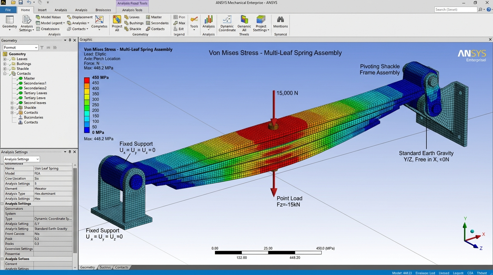

Design and Fatigue Failure Analysis of a Leaf Spring using ANSYS
Abstract & Methodology: Automotive multi-leaf springs are critical suspension components subjected to continuous, cyclic, and stochastic impact loads transmitted from uneven road surfaces. This research focused on comprehensive computer-aided design (CAD) and finite element analysis (FEA) to evaluate the structural integrity, stress distribution, and fatigue failure life of a semi-elliptic leaf spring assembly.
A 3D parametric CAD model was constructed based on standard commercial vehicle specifications. Static structural and fatigue analyses were conducted within ANSYS Workbench to analyze von Mises stress contours, maximum deflection under peak payload, and localized stress concentrations near the master leaf eye ends and center clamp interface.
Fatigue life and damage accumulation were evaluated using the ANSYS Fatigue Tool utilizing the stress-life (S-N) approach with Goodman mean stress correction. The study identified critical cyclic failure locations and provided insights into optimal thickness gradations and material selections to enhance fatigue endurance and operational safety.